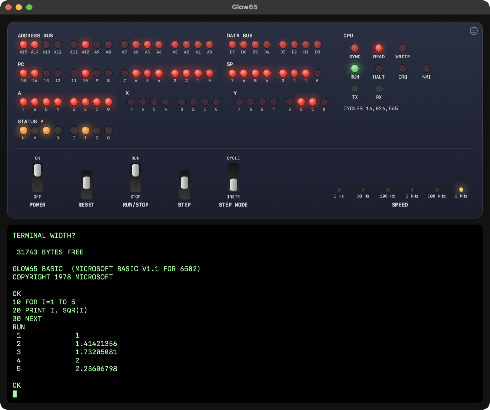
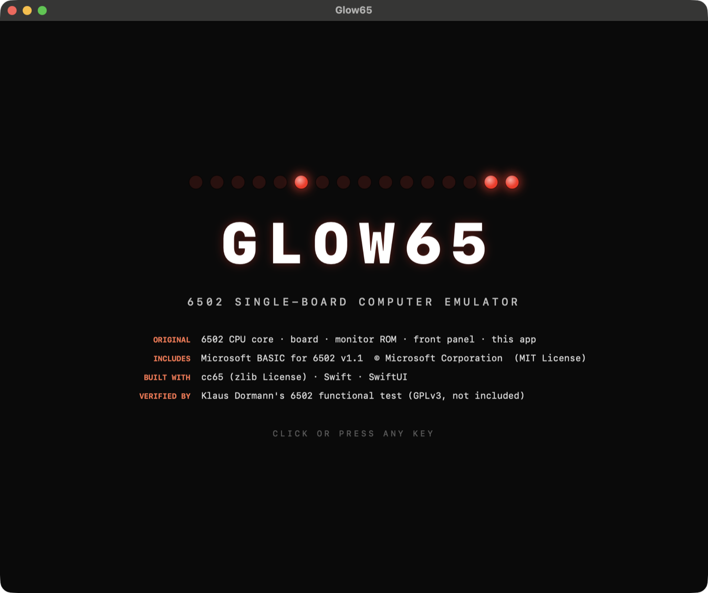

Built to make the CPU visible.CPU の動きを、見えるようにする。
Most emulators run fast and show nothing. Glow65 slows down, lights up, and lets you step through every bus cycle.多くのエミュレータは速く動くだけで、中身は見えません。Glow65 は速度を落とし、光らせ、バスサイクルを 1 つずつ辿れます。
A real front panel本物のようなフロントパネル
Address bus, data bus, PC, SP, A, X, Y, status flags, SYNC / READ / WRITE and UART activity — all as LEDs.アドレスバス、データバス、PC、SP、A、X、Y、フラグ、SYNC / READ / WRITE、UART の動きを LED で表示します。
Step one cycle at a time1 サイクルずつ進める
Stop the CPU, then step by instruction or by single bus cycle. Speeds from 1 Hz to 1 MHz.CPU を止めて、1 命令または 1 バスサイクルずつ進められます。速度は 1Hz から 1MHz まで。
LEDs that actually glow本当に残光する LED
At high speed each LED shows how often its bit was 1 — just like a real panel's flicker and glow.高速時は、各ビットが 1 だった割合を明るさにします。実機のパネルのちらつきと残光に近い見え方です。
Runs Microsoft BASICMicrosoft BASIC が動く
Microsoft's 1978 6502 BASIC, converted from its original assembler source and built for this board.1978 年の Microsoft 6502 BASIC を、原典のアセンブラソースから変換して、このボード向けにビルドしています。
Verified CPU core検証済みの CPU コア
Passes Klaus Dormann's functional test — 96,241,367 cycles, decimal mode included.Klaus Dormann の機能テストに合格(96,241,367 サイクル、10 進モードを含む)。
Small and readable小さく、読みやすい
Swift, no dependencies. The CPU core is one file with no UI code. MIT licensed.Swift 製で依存ライブラリはなし。CPU コアは UI を含まない 1 ファイル。MIT ライセンス。


An imaginary 6502 board.架空の 6502 ボード。
No real machine's ROM is used. The board, the monitor and the panel are written for this project.実在機の ROM は使っていません。ボード、モニタ、パネルはこのプロジェクトのために書きました。
Memory mapメモリマップ
| ADDRESS | CONTENTS内容 |
|---|---|
| $0000–$7FFF | RAM 32 KB |
| $A000 / $A001 | UART status · data (6850-style)UART 状態・データ(6850 風) |
| $C000–$EFFF | Microsoft BASIC |
| $F000–$FFFF | Monitor ROM, vectorsモニタ ROM、ベクタ |
Two ways to show the busバスの 2 つの見せ方
1 kHz and below — every bus cycle is shown one at a time. While an instruction plays, the register LEDs keep their values from before it.1kHz 以下 — バスサイクルを 1 つずつ表示します。命令の再生中、レジスタ LED は命令の実行前の値を保ちます。
100 kHz and above — each LED's brightness is the share of cycles in which its bit was 1, so busy lines glow and idle lines go dark.100kHz 以上 — 各 LED の明るさは、そのビットが 1 だったサイクルの割合です。よく動く線は明るく、静かな線は暗くなります。
From clone to BASIC in a few commands.clone から BASIC まで、わずかなコマンドで。
Needs macOS 14+, Xcode, and cc65 (brew install cc65) to build the ROMs.macOS 14 以降、Xcode、ROM のビルド用に cc65(brew install cc65)が必要です。
# clone git clone https://github.com/Masakai/Glow65.git && cd Glow65 # build the ROMs brew install cc65 Tools/build_monitor.sh && Tools/build_basic.sh # run the front panel app swift run Glow65App
- Click the terminal, then flip the POWER switch up. The monitor starts.端末をクリックして、POWER スイッチを上げます。モニタが起動します。
- Type
Band press Return to start BASIC. Press Return for the two prompts.Bと入力して Return。BASIC が起動します。2 つの質問は Return で既定値になります。 - Type a program,
RUNit, and slow the SPEED switch down to watch it run.プログラムを入力してRUN。SPEED を下げると、実行の様子が見えます。
Not all of it is original — here is what is.全部が自作ではありません。内訳はこうです。
| Original自作 | 6502 CPU core, board, monitor ROM, front panel, app, BASIC conversion script (MIT License)6502 CPU コア、ボード、モニタ ROM、フロントパネル、アプリ、BASIC 変換スクリプト(MIT License) |
| Included同梱 | Microsoft BASIC for 6502 v1.1 — © Microsoft Corporation, MIT License · microsoft/BASIC-M6502 |
| Built withビルドに使用 | cc65 (zlib License) · Swift · SwiftUI |
| Verified by検証に使用 | Klaus Dormann's 6502 functional test (GPLv3, not included)Klaus Dormann の 6502 機能テスト(GPLv3、同梱しない) |
No Altair or IMSAI names, logos or photos are used. The panel design is original.Altair、IMSAI の名称、ロゴ、写真は使っていません。パネルの意匠は自作です。